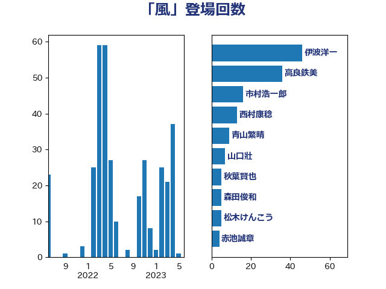

単語「風」

| 伊波洋一 | 無所属 | 46 回 |
| 高良鉄美 | 無所属 | 36 回 |
| 市村浩一郎 | 日本維新の会 | 16 回 |
| 西村康稔 | 自由民主党 | 13 回 |
| 青山繁晴 | 自由民主党 | 9 回 |
| 山口壯 | 自由民主党 | 7 回 |
| 秋葉賢也 | 自由民主党 | 5 回 |
| 森田俊和 | 立憲民主党 | 5 回 |
| 松木けんこう | 立憲民主党 | 5 回 |
| 赤池誠章 | 自由民主党 | 4 回 |
| 芳賀道也 | 国民民主党 | 4 回 |
| 鈴木敦 | 国民民主党 | 3 回 |
| 金子恵美 | 立憲民主党 | 3 回 |
| 野田国義 | 立憲民主党 | 3 回 |
| 緒方林太郎 | 無所属 | 3 回 |
| 山田勝彦 | 立憲民主党 | 3 回 |
| 寺田静 | 無所属 | 3 回 |
| 大串博志 | 立憲民主党 | 3 回 |
| 加藤鮎子 | 自由民主党 | 3 回 |
| 井坂信彦 | 立憲民主党 | 3 回 |
| 三反園訓 | 無所属 | 3 回 |
| 馬場成志 | 自由民主党 | 2 回 |
| 青木愛 | 立憲民主党 | 2 回 |
| 阿達雅志 | 自由民主党 | 2 回 |
| 西銘恒三郎 | 自由民主党 | 2 回 |
| 竹詰仁 | 国民民主党 | 2 回 |
| 石橋通宏 | 立憲民主党 | 2 回 |
| 田村智子 | 日本共産党 | 2 回 |
| 田村まみ | 国民民主党 | 2 回 |
| 牧原秀樹 | 自由民主党 | 2 回 |
| 比嘉奈津美 | 自由民主党 | 2 回 |
| 森屋宏 | 自由民主党 | 2 回 |
| 早坂敦 | 日本維新の会 | 2 回 |
| 斎藤洋明 | 自由民主党 | 2 回 |
| 小野泰輔 | 日本維新の会 | 2 回 |
| 小沢雅仁 | 立憲民主党 | 2 回 |
| 安江伸夫 | 公明党 | 2 回 |
| 大島敦 | 立憲民主党 | 2 回 |
| 吉良州司 | 無所属 | 2 回 |
| 古屋範子 | 公明党 | 2 回 |
| 北神圭朗 | 無所属 | 2 回 |
| 勝部賢志 | 立憲民主党 | 2 回 |
| 高木かおり | 日本維新の会 | 1 回 |
| 馬場伸幸 | 日本維新の会 | 1 回 |
| 青木一彦 | 自由民主党 | 1 回 |
| 青島健太 | 日本維新の会 | 1 回 |
| 青山大人 | 立憲民主党 | 1 回 |
| 階猛 | 立憲民主党 | 1 回 |
| 長島昭久 | 自由民主党 | 1 回 |
| 長妻昭 | 立憲民主党 | 1 回 |
| 鈴木義弘 | 国民民主党 | 1 回 |
| 野村哲郎 | 自由民主党 | 1 回 |
| 角田秀穂 | 公明党 | 1 回 |
| 西村明宏 | 自由民主党 | 1 回 |
| 萩生田光一 | 自由民主党 | 1 回 |
| 菅家一郎 | 自由民主党 | 1 回 |
| 荒井優 | 立憲民主党 | 1 回 |
| 舟山康江 | 国民民主党 | 1 回 |
| 舞立昇治 | 自由民主党 | 1 回 |
| 臼井正一 | 自由民主党 | 1 回 |
| 紙智子 | 日本共産党 | 1 回 |
| 篠原孝 | 立憲民主党 | 1 回 |
| 笠井亮 | 日本共産党 | 1 回 |
| 福岡資麿 | 自由民主党 | 1 回 |
| 石垣のりこ | 立憲民主党 | 1 回 |
| 矢倉克夫 | 公明党 | 1 回 |
| 牧義夫 | 立憲民主党 | 1 回 |
| 滝波宏文 | 自由民主党 | 1 回 |
| 渡辺周 | 立憲民主党 | 1 回 |
| 渡辺創 | 立憲民主党 | 1 回 |
| 浮島智子 | 公明党 | 1 回 |
| 浦野靖人 | 日本維新の会 | 1 回 |
| 河西宏一 | 公明党 | 1 回 |
| 池田佳隆 | 自由民主党 | 1 回 |
| 永岡桂子 | 自由民主党 | 1 回 |
| 横山信一 | 公明党 | 1 回 |
| 柴田巧 | 日本維新の会 | 1 回 |
| 柳本顕 | 自由民主党 | 1 回 |
| 枝野幸男 | 立憲民主党 | 1 回 |
| 松沢成文 | 日本維新の会 | 1 回 |
| 松本剛明 | 自由民主党 | 1 回 |
| 杉本和巳 | 日本維新の会 | 1 回 |
| 末次精一 | 立憲民主党 | 1 回 |
| 末松義規 | 立憲民主党 | 1 回 |
| 末松信介 | 自由民主党 | 1 回 |
| 有村治子 | 自由民主党 | 1 回 |
| 斎藤アレックス | 国民民主党 | 1 回 |
| 斉藤鉄夫 | 公明党 | 1 回 |
| 平木大作 | 公明党 | 1 回 |
| 岡田直樹 | 自由民主党 | 1 回 |
| 山田俊男 | 自由民主党 | 1 回 |
| 山井和則 | 立憲民主党 | 1 回 |
| 小西洋之 | 立憲民主党 | 1 回 |
| 小川淳也 | 立憲民主党 | 1 回 |
| 宮沢洋一 | 自由民主党 | 1 回 |
| 室井邦彦 | 日本維新の会 | 1 回 |
| 奥下剛光 | 日本維新の会 | 1 回 |
| 太田房江 | 自由民主党 | 1 回 |
| 大河原まさこ | 立憲民主党 | 1 回 |
| 大塚拓 | 自由民主党 | 1 回 |
| 和田有一朗 | 日本維新の会 | 1 回 |
| 和田政宗 | 自由民主党 | 1 回 |
| 吉田統彦 | 立憲民主党 | 1 回 |
| 北村経夫 | 自由民主党 | 1 回 |
| 井原巧 | 自由民主党 | 1 回 |
| 五十嵐清 | 自由民主党 | 1 回 |
| 中司宏 | 日本維新の会 | 1 回 |